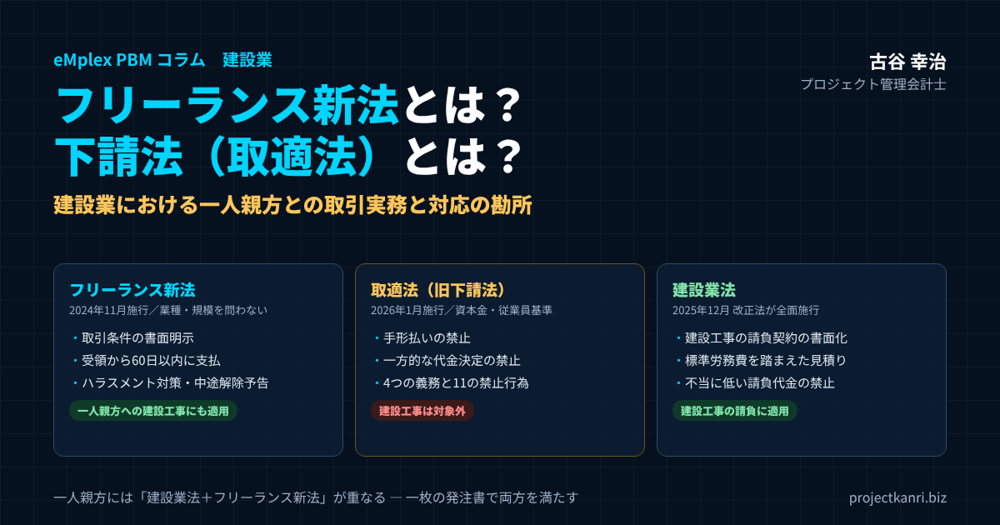

フリーランス新法とは？下請法（取適法）とは？―建設業における一人親方との取引実務と対応の勘所

結論：一人親方との取引は「経験と慣習」から「文書と手続き」へ
この記事の要点
- フリーランス新法とは：従業員を使わない個人・一人社長の法人への業務委託のルール（2024年11月施行）。業種・資本金を問わず適用
- 下請法とは：代金の支払遅延や減額を防ぐ法律。2026年1月から「取適法」に改正（従業員基準の追加、手形払い禁止など）
- 建設業の適用関係：建設工事は取適法の対象外で建設業法。一人親方には建設業法とフリーランス新法が重なる
- 実務の基本：取引条件の書面明示、受領から60日以内の支払期日、標準労務費を踏まえた単価、ハラスメント防止
- 管理会計：一人親方への外注費を法人の協力会社と分け、プロジェクトコードで現場別に管理
最初に結論を申し上げます。一人親方との取引は、これまでの慣習をすべて否定するものではありません。しかし、長年の信頼関係と口約束だけで成り立ってきた取引を、良好な関係を保ったまま、法律が求める「文書と手続き」に基づく取引へと切り替えていく段階に来ています。取引条件の書面での明示、支払期日の設定、ハラスメントの防止、そして労務費への適正な配慮。これらの基本を押さえることが、会社を法的なリスクから守るとともに、職人から選ばれる会社になるための土台になります。
建設業界では、口約束と長年の信頼関係だけで一人親方への発注を続けてきた会社が少なくありません。「いつもの仕事を、いつもの単価で」「来週からあの現場に入ってほしい」。こうしたやり取りで仕事が回ってきたのは、それだけ職人と会社の間に信頼があったからです。その信頼は、建設業の大切な財産です。
一方で、法律の環境は大きく変わりました。2024年11月に施行されたフリーランス新法、正式には「特定受託事業者に係る取引の適正化等に関する法律」により、従業員を使わずに一人で事業を営む個人に業務を委託する際には、業務の内容や報酬の額を書面等で明示する義務や、報酬の支払期日を定める義務などが課されるようになりました。一人親方の多くは、この法律が保護の対象とする「特定受託事業者」に当たります。さらに、2025年12月には改正建設業法が全面施行され、著しく低い労務費による見積りの禁止などの新しいルールが加わりました。2026年1月には、下請法が改正されて「取適法」と呼ばれる新しい法律に生まれ変わっています。
慣習だけに頼った取引を続けることは、今後は法的なリスクとして具体的に表面化しかねません。行政による指導や勧告、公表といった直接の不利益だけでなく、取引条件をめぐるトラブルや、職人の離反という形で、経営に影響が及ぶ可能性もあります。
建設業は、深刻な担い手不足に直面しています。技能を持つ職人の高齢化が進み、若い世代の入職は思うように増えていません。その中で、一人親方は、現場を支える欠かせない存在です。一人親方との取引を適正にすることは、法律を守るためだけでなく、限られた担い手に選ばれ、長く一緒に仕事を続けてもらうための、経営上の重要な課題なのです。
私は新卒で入社した朋友建設で、多くの一人親方の職人たちとの長年の付き合いの中で仕事が成り立っている現場を見てきました。そして、会社が和議という局面を迎えたとき、契約の条件が曖昧だったことが、支払いの交渉の場面で双方にとって不利益な混乱を招いた場面を目の当たりにしました。この経験から、良好な関係の維持と、取引条件の明確化は両立できるものであり、むしろ条件を明確にすることこそが、長く良い関係を続けるための条件だと考えるようになりました。
本稿では、まず「フリーランス新法とは何か」「下請法とは何か」という基本を整理し、そのうえで、建設業の一人親方との取引にどの法律がどう適用されるのか、そして実務で何をすべきかを順にお伝えします。
なお、本稿は2026年9月に公開した同じテーマのコラムを、大幅に加筆したものです。初版ではフリーランス新法への対応の要点をお伝えしましたが、今回は、建設業法や取適法（旧下請法）との関係、労働者性の判断、労務費の新しいルール、原価管理と資金繰りへの影響などを加えて、内容を大きく掘り下げています。本稿は法律の一般的な考え方を整理したものであり、個別の取引への法的な判断については、弁護士や社会保険労務士などの専門家にご確認ください。
フリーランス新法とは：目的・対象・発注者の7つの義務
最初に、フリーランス新法とは何かを整理しておきます。フリーランス新法は、正式には「特定受託事業者に係る取引の適正化等に関する法律」といい、2024年11月1日に施行されました。フリーランス保護法、フリーランス法とも呼ばれます。
この法律の目的は二つあります。一つは、フリーランスと発注する事業者との間の取引を適正にすること。もう一つは、フリーランスが安心して働ける環境を整えることです。前者は、取引条件の明示や支払期日、禁止行為など、下請法に近い取引のルールです。後者は、ハラスメントの防止や育児・介護への配慮、中途解除の予告など、働く環境に関するルールです。取引の公正さと、働き方の保護の両面を持つことが、フリーランス新法の大きな特徴です。
保護の対象となるのは、「特定受託事業者」です。業務の委託を受ける事業者のうち、従業員を使用しない個人、または代表者一人以外に役員がおらず従業員も使用しない法人を指します。ここでいう従業員は、週の所定労働時間が20時間以上で、31日以上の雇用が見込まれる労働者です。家族を手伝わせている程度の一人親方の多くは、この特定受託事業者に当たります。
フリーランス新法の大きな特徴は、下請法と違って、発注する側の資本金の規模による要件がないことです。発注する側が従業員を使っていない個人であっても、取引条件を明示する義務は負います。そして、従業員を使用する発注者、つまり「特定業務委託事業者」には、さらに多くの義務が課されます。業種も問いません。建設業、IT、デザイン、運送など、あらゆる業種の取引が対象になります。
| 義務・禁止 | 対象となる発注者 | 委託期間の要件 |
|---|---|---|
| ① 取引条件の明示（書面・メール等） | すべての発注事業者（業務委託事業者） | なし |
| ② 支払期日の設定・期日内の支払（60日以内） | 従業員を使用する発注事業者（特定業務委託事業者） | なし |
| ③ 募集情報の的確な表示 | 特定業務委託事業者 | なし |
| ④ ハラスメント対策の体制整備 | 特定業務委託事業者 | なし |
| ⑤ 7つの禁止行為（受領拒否・減額・返品・買いたたき・購入強制・不当な利益提供要請・不当なやり直し） | 特定業務委託事業者 | 1か月以上 |
| ⑥ 育児・介護との両立への配慮 | 特定業務委託事業者 | 6か月以上（未満は努力義務） |
| ⑦ 中途解除・不更新の30日前予告 | 特定業務委託事業者 | 6か月以上 |
※2024年11月1日施行。所管は公正取引委員会・中小企業庁・厚生労働省。
表のとおり、義務の範囲は、発注者が従業員を使っているかどうかと、委託の期間によって段階的に広がります。多くの建設会社は従業員を使用しているため、特定業務委託事業者として、明示の義務に加えて、支払期日の設定、募集情報の的確な表示、ハラスメント対策の義務を負います。一か月以上継続する委託では七つの禁止行為が、六か月以上継続する委託では育児・介護への配慮と中途解除の予告が加わります。
違反があった場合には、公正取引委員会、中小企業庁、厚生労働省が、助言や指導、勧告を行い、勧告に従わない場合には命令や公表の対象になります。命令に違反した場合には、50万円以下の罰金が科される可能性もあります。
下請法とは：2026年1月から「取適法」へ変わった理由と主な改正点
次に、下請法とは何かを整理します。下請法は、正式には「下請代金支払遅延等防止法」といい、親事業者が下請事業者に業務を委託する取引で、代金の支払遅延や不当な減額といった、取引上の優越的な立場の濫用を防ぐための法律でした。独占禁止法の特別法として、1956年に制定されています。
この下請法が、2026年1月1日から大きく改正され、名称も「製造委託等に係る中小受託事業者に対する代金の支払の遅延等の防止に関する法律」、略称「中小受託取引適正化法」、通称「取適法」に変わりました。用語も、親事業者は「委託事業者」、下請事業者は「中小受託事業者」、下請代金は「製造委託等代金」に改められています。「下請」という言葉が持つ上下関係の印象を改め、対等な取引関係を目指すという考え方が、名称の変更に込められています。
取適法の対象となるのは、製造委託、修理委託、情報成果物作成委託、役務提供委託、そして新たに加わった特定運送委託の五つの取引です。適用されるかどうかは、取引の内容と、委託する側と受託する側の規模で決まります。これまでの資本金の基準に加えて、改正によって従業員の数の基準が新たに設けられ、資本金が小さくても従業員の多い事業者は、委託事業者として規制の対象になるようになりました。
| 取引の種類 | 委託事業者 | 中小受託事業者 |
|---|---|---|
| 製造委託・修理委託・特定運送委託、情報成果物作成委託・役務提供委託のうちプログラム作成・運送・倉庫保管・情報処理 | 資本金3億円超、または資本金1千万円超3億円以下、または従業員300人超 | 資本金3億円以下、または資本金1千万円以下、または従業員300人以下（委託事業者の区分に対応） |
| 上記以外の情報成果物作成委託・役務提供委託 | 資本金5千万円超、または資本金1千万円超5千万円以下、または従業員100人超 | 資本金5千万円以下、または資本金1千万円以下、または従業員100人以下（委託事業者の区分に対応） |
※資本金基準・従業員基準の組み合わせの詳細は、公正取引委員会・中小企業庁の資料でご確認ください。建設業を営む事業者が請け負う建設工事は対象外です。
委託事業者には、発注内容等の明示、取引記録の作成と2年間の保存、支払期日の設定、遅延利息の支払いという四つの義務が課されます。支払期日は、検査の有無にかかわらず、給付を受領した日から60日以内のできる限り短い期間内に定めなければなりません。期日までに支払わなければ、年率14.6％の遅延利息が生じます。
| 区分 | 内容 |
|---|---|
| 義務 | ①発注内容等の明示 ②取引記録の作成・2年間保存 ③支払期日の設定（受領から60日以内） ④遅延利息の支払（年率14.6％） |
| 禁止行為 | ①受領拒否 ②支払遅延（手形払等を含む） ③減額 ④返品 ⑤買いたたき ⑥購入・利用強制 ⑦報復措置 ⑧有償支給原材料等の対価の早期決済 ⑨不当な経済上の利益の提供要請 ⑩不当な給付内容の変更・やり直し ⑪協議に応じない一方的な代金決定 |
| 2026年改正の主な点 | 名称・用語の変更、従業員基準の追加、特定運送委託の追加、手形払等の禁止、協議に応じない一方的な代金決定の禁止、事業所管省庁の指導・助言権限、電磁的方法による明示 |
※2026年1月1日施行。
今回の改正で新たに加わった禁止行為が二つあります。一つは、中小受託事業者から価格の協議を求められたのに、協議に応じなかったり、必要な説明をしなかったりして、一方的に代金を決めることの禁止です。労務費や原材料費の上昇を、取引価格に適切に反映させるためのルールです。もう一つは、手形による支払いの禁止です。電子記録債権などの支払手段も、支払期日までに代金の満額を受け取ることが難しいものは認められません。あわせて、事業を所管する省庁にも指導や助言の権限が与えられ、執行の体制が強化されています。
建設業ではどの法律が適用されるのか：建設業法・フリーランス新法・取適法（旧下請法）の関係
一人親方との取引には、複数の法律が関わります。どの取引に、どの法律が適用されるのかを整理しておくことは、実務対応の前提です。本稿のタイトルにも「下請法」とありますが、ここは特に誤解の多いところなので、丁寧に確認しておきます。
まず、建設業法です。建設工事の請負契約には、建設業法が適用されます。元請と下請の間の建設工事の請負契約はもちろん、建設業者が一人親方に建設工事の一部を請け負わせる場合も、建設業法の規律の対象になります。建設業法は、建設工事の請負契約を書面で締結することや、下請代金の支払い、不当に低い請負代金の禁止など、請負契約を適正にするためのルールを定めています。
次に、取適法、つまり改正された下請法です。2026年1月1日から、下請法は大きく改正され、法律の名称も「製造委託等に係る中小受託事業者に対する代金の支払の遅延等の防止に関する法律」、略称「中小受託取引適正化法」、通称「取適法」に変わりました。ここで重要なのは、建設業法に定める建設業を営む者が業として請け負う建設工事は、取適法の対象にはならないという点です。これは、建設工事の下請負については、建設業法に取適法と似た規定が置かれ、請負契約の適正化が別に図られているためです。つまり、建設会社が一人親方に建設工事そのものを委託する取引には、取適法ではなく、建設業法が中心的に適用されます。
ただし、建設会社であっても、建設工事そのものではない周辺の取引、たとえば資材の製造の委託、設計図やデザインの作成の委託、システムの開発、運送の委託などについては、取適法の対象となる可能性があります。取引ごとに、建設業法と取適法のどちらが適用されるのかを確認する必要があります。
そして、フリーランス新法です。フリーランス新法は、従業員を使わない個人、または代表者一人だけで従業員のいない法人に業務を委託する取引に適用されます。この法律は業種を問わず適用されるため、建設会社が一人親方に建設工事を委託する場合にも適用されます。つまり、一人親方への建設工事の委託には、建設業法とフリーランス新法の両方が重なって適用されることになります。
こうして整理すると、一人親方への建設工事の委託では、建設業法とフリーランス新法の両方の要求を満たす必要があり、建設工事以外の周辺の取引では、取適法の要求にも注意が必要だということが分かります。自社の取引を種類ごとに一覧にし、それぞれにどの法律が適用されるのかを確認しておくことをお勧めします。
| 項目 | フリーランス新法 | 取適法（旧下請法） | 建設業法 |
|---|---|---|---|
| 守る相手 | 従業員を使わない個人・一人社長の法人 | 中小受託事業者（規模で判定） | 下請負人（建設工事） |
| 規模の要件 | なし（明示義務はすべての発注者） | 資本金・従業員数の基準 | なし |
| 対象取引 | 業務委託全般（業種を問わない） | 製造・修理・情報成果物作成・役務提供・特定運送の委託 | 建設工事の請負 |
| 建設工事 | 適用される | 対象外 | 適用される |
| 支払期日 | 受領から60日以内（再委託は30日以内の特例） | 受領から60日以内 | 下請代金の支払期限等を規定 |
| 働く環境のルール | ハラスメント対策・育児介護配慮・中途解除予告 | なし | なし（労務費の基準など別の規律） |
※概要の整理です。個別の取引への適用は専門家にご確認ください。
フリーランス新法が発注する側に課す義務は、発注する側の規模や、委託の期間によって異なります。従業員を使っていない発注者であっても、取引条件を明示する義務は負います。従業員を使っている発注者、つまり多くの建設会社には、これに加えて、報酬の支払期日を定めて期日までに支払う義務、募集の情報を正確に表示する義務、ハラスメントの防止のための体制を整える義務が課されます。さらに、一定の期間以上継続する委託については、受領の拒否や報酬の減額といった禁止行為の規制、育児や介護への配慮、中途解除の際の事前の予告といった義務が加わります。
実務上の注意点として、建設業法とフリーランス新法の要求は、似ている部分もあれば、異なる部分もあります。たとえば、支払いの期限の考え方や、明示すべき事項の範囲は、二つの法律で同じではありません。両方の要求を満たすためには、それぞれの法律が求める事項を一覧にし、自社の発注書や契約書がすべてを満たしているかを照らし合わせて確認することが確実です。
法律の適用関係は、個別の取引の実態によって判断が分かれることもあります。判断に迷う取引については、顧問弁護士に確認してください。
一人親方の法的な位置づけ：「労働者」でも「単純な取引先」でもない中間的な存在
一人親方への対応を考えるうえで、最初に理解しておくべきなのは、その法的な位置づけの難しさです。
一人親方は、法律上は個人事業主に位置づけられます。会社と雇用契約を結んでいるわけではなく、請負や業務委託の契約に基づいて、自らの技能で仕事を完成させ、その対価として報酬を受け取ります。自分で道具をそろえ、自分の判断で仕事を進め、複数の会社から仕事を受けることもできる。本来の一人親方は、独立した事業者です。
しかし、実態として、発注元の指揮命令のもとで日々の作業を行っているケースも多く見られます。毎日決まった時間に決まった現場に来るよう指示され、作業の手順も細かく指図され、他の会社の仕事は事実上受けられない。報酬も、仕事の完成ではなく、働いた日数に応じて支払われる。こうした実態がある場合、契約の形式が請負や業務委託であっても、労働基準法上の「労働者」に当たると判断される可能性があります。
労働者に当たるかどうか、いわゆる労働者性は、契約の名称ではなく、働き方の実態から総合的に判断されます。主な判断の要素としては、仕事の依頼を断る自由があるか、業務の遂行について指揮監督を受けているか、勤務の場所や時間が拘束されているか、他の人が代わりに仕事をすることが認められているか、報酬が労務の提供の時間に対して支払われているか、といった点が挙げられます。加えて、高価な機械や道具を自分で負担しているか、報酬の額が同じ仕事をする社員と比べて高いか、他社の仕事を受けることが制約されていないか、といった事業者としての性格も考慮されます。
この指揮命令の実態が強い場合、労働基準法上の労働者性が認められ、思わぬ労務のリスクにつながる可能性があります。たとえば、現場での事故の際の責任、未払いの残業代の請求、社会保険や労働保険への加入の問題などです。建設業界では、本来は雇用すべき人を、社会保険料などの負担を避けるために形式的に一人親方として扱う、いわゆる「偽装一人親方」の問題が指摘されてきました。国も、建設業の社会保険の加入対策の一環として、一人親方の適正化に取り組んでいます。
一方で、フリーランス新法は、労働者ではないことを前提に、対等な取引関係を守るための規律を課すものです。つまり、一人親方との取引では、「労働者として扱うべき実態になっていないか」という労働法の視点と、「独立した事業者との取引として適正か」という取引法の視点の、両方から点検する必要があります。この二重の位置づけを正しく理解しておくことが、実務対応の出発点になります。
労働者性の問題を避けるための基本は、一人親方との関係を、実態としても独立した事業者との取引にしておくことです。仕事の内容と完成の基準、報酬の決め方を契約で明確にし、作業の細かな手順は職人の裁量に委ねる。現場の安全のための指示や、工程の調整のための指示は当然に必要ですが、それを超えて、社員と同じように日々の業務を指揮監督することは避ける。こうした線引きを、現場の責任者にも理解してもらうことが大切です。
労働者性の判断は、一つの要素だけで決まるものではありません。複数の要素を総合的に見て判断されます。そのため、「この条件さえ満たせば大丈夫」という単純な基準はありません。自社の一人親方との取引の実態を、判断の要素に照らして一つずつ点検し、雇用に近い実態になっている取引がないかを確認することが大切です。もし雇用に近い実態の取引があれば、その職人を社員として雇用する、あるいは働き方を見直して独立した事業者としての実態を確保する、といった対応を検討する必要があります。
| 判断要素 | 労働者性が強まる方向の例 |
|---|---|
| 仕事の依頼を断る自由 | 依頼を断れない、断ると不利益がある |
| 指揮監督 | 作業の手順・方法を細かく指図される |
| 時間・場所の拘束 | 毎日決まった時間・場所への出勤を指示される |
| 代替性 | 他の人に作業を任せることが認められない |
| 報酬の性格 | 成果ではなく時間で支払われる |
| 事業者性 | 道具や機械を自分で用意していない、他社の仕事をしていない |
※労働者性は契約の名称ではなく実態で総合的に判断されます。
また、一人親方は、原則として労災保険の対象外ですが、特別加入の制度を利用して労災保険に加入することができます。取引を始める際に、一人親方が労災保険に特別加入しているかを確認することは、現場の安全管理の観点からも、元請としての責任の観点からも重要です。
取引条件の明示と契約書面：二つの法律を一枚で満たす発注書
フリーランス新法では、業務を委託する際に、直ちに、業務の内容、報酬の額、支払期日などの取引条件を、書面または電子メールなどの電磁的な方法で明示することが求められます。明示すべき事項には、委託する事業者と受託する事業者の名称、委託した日、業務の内容、給付を受領する日や役務の提供を受ける日、給付を受領する場所、給付の内容について検査をする場合はその完了日、報酬の額、支払期日などが含まれます。
一方、建設業法では、建設工事の請負契約を締結する際に、工事の内容、請負代金の額、工事の着手と完成の時期、請負代金の支払いの時期と方法、設計変更や工期の変更の際の取り扱いなど、法律で定められた事項を書面に記載し、署名や記名押印をして相互に交付することが求められています。電子的な方法による契約も、一定の要件のもとで認められています。
一人親方への建設工事の委託では、この二つの法律の両方の要求を満たす必要があります。実務上は、建設業法が求める契約書面、または注文書と請書の中に、フリーランス新法で明示が求められる事項も漏れなく盛り込んでおけば、一つの書面で両方の要求を満たすことができます。二種類の書類を別々に作る必要はありません。
| 事項 | フリーランス新法 | 建設業法（請負契約） |
|---|---|---|
| 発注者・受注者の名称 | 必要 | 必要 |
| 業務（工事）の内容 | 必要 | 必要 |
| 報酬（請負代金）の額 | 必要 | 必要 |
| 支払期日（現金以外で支払う場合はその方法） | 必要 | 支払の時期・方法が必要 |
| 給付の受領・役務提供の期日と場所 | 必要 | 着手・完成の時期 |
| 委託をした日 | 必要 | ― |
| 変更時の取り扱い | ― | 必要（設計変更・工期変更等） |
※主な事項の抜粋です。各法令の明示事項の全体は、所管官庁の資料でご確認ください。
建設業の現場では、口頭での指示や、現場での臨機応変な依頼が日常的に行われてきました。しかし、今後は、簡易な発注書やメールでのやり取りであっても、これらの必須の事項を記録に残す運用へと切り替えていく必要があります。フォーマットを一枚のシンプルな発注書に統一し、現場の責任者が使いやすい形にしておくことが、定着の鍵になります。
発注書のフォーマットを作る際に、私がお勧めしているポイントがいくつかあります。第一に、毎回変わる項目と、変わらない項目を分けることです。委託する側と受託する側の情報、支払いの方法、共通の取引条件といった、毎回変わらない項目は、あらかじめ印字しておくか、基本契約書にまとめておきます。そして、個別の発注書には、現場名、業務の内容、期間、報酬の額といった、毎回変わる項目だけを記入するようにします。こうすれば、現場の責任者の記入の手間は大きく減ります。
第二に、基本契約書と個別の発注書の二段構えにすることです。継続的に取引する一人親方とは、共通の取引条件を定めた基本契約書を一度結んでおき、個別の工事ごとには簡易な発注書で内容と金額を明示する。この形にすれば、法律が求める事項を漏れなく満たしながら、日々の発注の手続きを軽くすることができます。
第三に、追加や変更の依頼の扱いを決めておくことです。建設現場では、工事の途中で追加の作業や仕様の変更が発生することが珍しくありません。やむを得ず口頭で依頼した場合でも、事後に速やかに、内容と報酬の額を書面やメールで確認する運用を徹底することが望ましいといえます。追加や変更の内容が記録されていなければ、後で報酬をめぐるトラブルの原因になります。
長年の付き合いのある一人親方にも、書面での明示は必要です。信頼関係の有無にかかわらず、フリーランス新法の適用対象であれば、明示の義務は発生します。良好な関係だからこそ、後々のトラブルを避けるためにも、書面にしておくことをお勧めします。
書面の保存も忘れてはいけません。建設業法では、請負契約の書面などの営業に関する図書を一定の期間保存することが求められています。フリーランス新法の明示の内容も、後から確認できるよう保存しておく必要があります。紙の発注書を現場ごとに保管していると、必要なときに探し出すのが難しくなります。発注書を電子的に作成し、プロジェクトコードと結びつけて保存しておけば、監査や行政の調査の際にも、速やかに提示することができます。
支払期日：フリーランス新法の60日ルールと資金繰り
フリーランス新法では、報酬の支払期日を、原則として、発注した物品などを受け取った日、つまり給付を受領した日から数えて六十日以内の、できる限り短い期間内に定め、その期日までに支払うことが求められています。元請から受けた仕事の一部を一人親方に再委託する場合には、一定の条件のもとで、元の委託の支払期日から数えて三十日以内とする特例もあります。
これまで、検収の完了後に「月末締め翌月末払い」や「翌々月払い」といった慣行で運用していた会社は、支払いのサイクルの見直しが必要になる場合があります。特に注意が必要なのは、支払期日の起算点が、検収の完了日ではなく、給付を受領した日であるという点です。工事が完了して引き渡しを受けた日から、検収に時間がかかっている間も、六十日の期限は進んでいきます。検収の手続きが長引きがちな会社は、検収の流れそのものを見直す必要があるかもしれません。
支払いのサイクルの変更は、プロジェクトごとの資金繰りにも影響します。元請として発注者から工事代金を受け取る前に、一人親方への支払いが先に発生する場面が増えれば、その間の資金を会社が立て替える必要があります。大型の現場で多くの一人親方に発注している場合、その金額は決して小さくありません。原価管理の担当者は、支払期日のルールの変更を、単なる法務の対応としてではなく、資金計画の論点として捉える必要があります。現場ごとに、一人親方への支払いの予定と、発注者からの入金の予定を並べた資金の見通しを作り、必要な運転資金を事前に把握しておくことをお勧めします。
支払いの管理の面では、支払期日を一人親方ごと、発注ごとに一覧で把握し、期日が近づいたものを経理の担当者が確認できる仕組みを作っておくと安心です。支払いの遅れは、意図的でなくても、法律上の問題になり得ます。特に、現場からの請求書の回付が遅れて支払いが間に合わないというケースは、支払期日を給付の受領日から管理していれば、事前に防ぐことができます。
労務費とインボイス：単価の見直しと協議の進め方
次に、労務費です。2025年12月12日に改正建設業法が全面施行され、中央建設業審議会が作成した「労務費に関する基準」、いわゆる標準労務費を参考指標として、著しく低い労務費などによる見積りの提出や、注文者による、労務費などが著しく低くなるような見積りの変更の依頼が禁止されました。この改正の背景には、受注の競争が激しい中で、工事の代金の切り下げのしわ寄せが労務費に及び、職人や一人親方の賃金が適正に確保されず、人材の確保が難しくなるという悪循環がありました。
一人親方との取引においても、このルールの趣旨を踏まえて、労務費を不当に削るような単価の設定や、値下げの要求は避けなければなりません。長年据え置いてきた単価がある場合には、労務費の基準や、公共工事の設計労務単価の推移を参考に、見直しを検討すべき時期に来ていると言えます。単価の引き上げは原価を押し上げますが、それを元請として発注者との契約に適切に反映させることが、改正の本来の狙いです。見積りの段階で、一人親方に支払う労務費を適正に積み上げ、それを発注者に根拠をもって示すことが、元請の役割になります。
もう一つ、インボイス制度の影響にも触れておきます。一人親方の中には、消費税の免税事業者として、インボイスを発行できない人も少なくありません。免税事業者からの仕入れについては、仕入税額控除の経過措置が設けられており、2026年9月30日までは消費税相当額の八割を控除できました。令和8年度の税制改正でこの経過措置が見直され、2026年10月1日から2028年9月30日までは七割、その後は五割、三割と段階的に縮小し、2031年10月以降は控除できなくなります。あわせて、一つの免税事業者からの仕入れの額が年間一億円を超える部分には、経過措置を適用できない上限も設けられました。つまり、2026年10月からは、免税事業者である一人親方への支払いについて、会社が控除できる消費税の割合が下がり、実質的な負担が段階的に増えていくことになります。この負担増を理由に、一方的に報酬を引き下げることは、フリーランス新法や独占禁止法の観点から問題となるおそれがあります。取引条件を見直す場合は、一人親方と十分に協議し、合意のうえで行うことが大切です。税務上の具体的な取り扱いは、顧問税理士にご確認ください。
ハラスメント防止：現場の言葉遣いと安全のための指示
フリーランス新法では、業務を委託する相手方に対する言動について、ハラスメントを防止するための措置を講じることも求められています。具体的には、ハラスメントを行ってはならないという方針を明確にして周知すること、相談に応じて適切に対応するための体制を整えること、そして、ハラスメントが起きた場合に迅速かつ適切に対応することなどです。
建設現場では、職人どうしや、現場監督とのやり取りの中で、これまで問題視されてこなかった強い言葉遣いが、今後は改善を求められる対象になり得ます。怒鳴り声での指示、人格を否定するような叱責、仕事を干すことをほのめかすような発言。こうした言動は、相手が社員であれば問題になることは広く知られていますが、一人親方に対しても同じように問題になるのです。
一方で、建設現場では、安全の確保のために、厳しく、はっきりとした指示が必要な場面も少なくありません。危険な作業をやめさせるための強い声かけは、ハラスメントではなく、命を守るための必要な行為です。現場の安全の確保のための厳格な指示と、ハラスメントとの境界線を、現場の責任者にも周知しておくことが、重要な実務対応になります。私がお勧めしているのは、具体的な場面の例を挙げて、「これは必要な指示」「これは避けるべき言動」と整理した簡単な資料を作り、現場の責任者の研修で共有することです。
相談の窓口は、社員向けのハラスメントの相談窓口を、一人親方も利用できるように広げる形が現実的です。窓口の存在を、発注書や現場の掲示などで一人親方にも知らせておきます。相談した一人親方が、そのことを理由に取引を打ち切られるなどの不利益な扱いを受けることは、法律で禁止されています。
ハラスメントの防止は、元請の社員だけの問題ではありません。現場には、元請の社員、協力会社の社員、そして複数の一人親方が入り混じって働いています。一人親方に対するハラスメントが、協力会社の職長から行われることもあります。元請として現場全体の就業環境に責任を持つ立場から、現場の朝礼や安全の会議の場で、ハラスメントを許さないという方針を、現場に入るすべての人に繰り返し伝えることが大切です。
継続的な取引の禁止行為と、6か月以上の委託で求められる配慮
継続的な取引に関する規律にも注意が必要です。フリーランス新法では、一か月以上継続する業務委託について、受領の拒否、報酬の減額、返品、相場に比べて著しく低い報酬の設定、物の購入やサービスの利用の強制、不当な経済上の利益の提供の要請、そして不当な給付の内容の変更ややり直しといった行為が禁止されています。建設現場で起こりがちなのは、工事の完了後に、発注した側の都合で追加の手直しを無償で求めることや、元請が発注者から減額を求められたことを理由に、一人親方への報酬も一方的に減らすことです。こうした行為は、禁止行為に当たるおそれがあります。
さらに、六か月以上継続する業務委託については、一人親方から育児や介護との両立についての申し出があった場合に必要な配慮をすることや、契約を中途で解除したり、更新しなかったりする場合に、原則として三十日前までに予告することが求められます。長年同じ一人親方に継続的に仕事を依頼している建設会社では、この規律が適用される取引が多いはずです。
これらの規律は、一見すると発注する側の負担を増やすものに見えるかもしれません。しかし、その本質は、一人親方を、対等な事業のパートナーとして扱うことにあります。人手不足が深刻な建設業界において、腕の良い職人は、どの会社からも引く手あまたです。職人を大切にする会社であることは、法令の遵守である以上に、職人から選ばれるための競争力なのです。
原価管理：プロジェクトコード上での一人親方の位置づけ
ここからは、プロジェクト管理会計の視点から、一人親方との取引をどう管理すべきかを考えます。
原価計算の観点では、一人親方への支払いを、法人の外注先への支払いや、自社の直接人件費とは別に区分して管理することが望ましくなっています。これは、以前のコラム「プロジェクト原価計算における業務委託費・フリーランス活用の会計実務」で取り上げた論点とも共通しますが、法律の規律が異なる取引を区別して把握できるようにしておくことは、法令への対応の状況を確認するうえでも、原価の分析のうえでも役立ちます。
たとえば、工事の原価の区分として、材料費、労務費、外注費、経費という一般的な区分に加えて、外注費の内訳を「法人の協力会社」と「一人親方」に分けて集計できるようにしておきます。こうすることで、工事ごとに一人親方への依存度がどれくらいあるのか、一人親方への支払いの単価が工事や工種によってどう違うのか、といった分析が可能になります。
建設業特有の事情として、一人親方は複数の現場を掛け持ちしていることが多いという点があります。どの現場に、どれだけの日数と報酬が発生しているのかを、個人の単位で正確に追跡できる仕組みが、今後より重要になっていきます。現場ごとの原価を正しく把握するためだけでなく、支払期日の管理のためにも、一人親方ごとに、どの現場のどの仕事の給付をいつ受領し、いつまでに支払わなければならないのかを一覧で把握しておく必要があるからです。
私がお勧めしているのは、一人親方ごとの取引の台帳を、工事のプロジェクトコードと結びつけて管理することです。一人親方の名前、基本契約の有無、労災保険の特別加入の状況、インボイスの登録の有無といった属性の情報と、個別の発注ごとの現場、業務の内容、報酬の額、給付の受領日、支払期日を、一つの台帳で管理します。こうすれば、現場ごとの原価の集計と、法令への対応の確認を、同じデータから行うことができます。
実行予算との関係も整理しておきましょう。建設会社では、工事ごとに実行予算を組み、その実行予算に対する実績の原価を管理するのが一般的です。一人親方への発注も、実行予算の外注費の枠の中で管理されます。先ほど述べたように、労務費の基準を踏まえて単価を見直す場合、実行予算の段階で、見直した単価を前提に原価を積み上げておくことが大切です。実行予算を従来の単価のまま組み、現場で単価の見直しを行えば、その差額は実行予算の超過として表れることになります。
また、一人親方の稼働の実態を把握することは、先ほど述べた労働者性の問題を点検するうえでも役立ちます。特定の一人親方が、長期間にわたって一つの現場だけに、毎日決まった時間に入っている状態が続いていれば、実態として雇用に近い関係になっていないかを確認するきっかけになります。原価管理のためのデータが、そのまま労務のリスクの点検にも使えるのです。
こうした管理を、エクセルの台帳で行っている会社も多いと思います。一人親方の数や現場の数が少ないうちは、それでも回ります。しかし、取引の件数が増えると、支払期日の管理の漏れや、現場ごとの原価の集計の誤りが起きやすくなります。発注の段階でプロジェクトコードを付け、そのデータが原価の集計と支払いの管理の両方に使われる仕組みにしておくことが、手間とリスクの両方を減らす方法です。
エンプレックスでCFOを務めていた頃、協力会社や個人の委託先への外注費を、法人と個人に分けて案件ごとに集計する仕組みを整えたことがあります。区分して見ることで、案件によって個人の委託先への依存度が大きく異なり、依存度の高い案件ほど、要員の確保の面でのリスクを抱えていることが分かりました。原価の区分を少し細かくするだけで、案件の採算の分析だけでなく、要員の確保のリスクまで見えるようになったのです。
現場への定着：懸念への答えと、工種による違い
新しいルールを現場に定着させるには、現場の責任者の理解と協力が欠かせません。
現場の責任者からは、「書類のやり取りが増えて現場が回らなくなるのではないか」という懸念が挙がりやすいところです。この懸念には、発注書のフォーマットをできる限り簡素にし、スマートフォンから数分で作成し、送付できる仕組みを用意することで対応できます。手続きの煩雑さそのものではなく、手続きの設計が悪いことが問題であるケースが多く、道具の選び方と運用の流れの工夫で、現場の負担の増加を最小限に抑えることが可能です。
もう一つよく挙がる懸念が、「職人に書類を求めると、関係がぎくしゃくするのではないか」というものです。長年、口約束で仕事をしてきた職人の中には、書面でのやり取りに戸惑う人もいるでしょう。この懸念には、書面にすることが職人自身を守ることにつながると、丁寧に伝えることが大切です。報酬の額と支払期日が書面で明確になっていれば、職人は安心して仕事ができます。追加の作業についても、書面で確認されていれば、後で報酬が支払われないという心配がありません。書面化は、会社のためだけでなく、職人のためでもあるのです。実際、若い世代の職人ほど、条件が明確な会社を好む傾向があると感じています。
一人親方との取引の実務は、建設業の中でも、工種によって注意すべき点が異なります。躯体工事や設備工事のように、長期にわたって同じ職人と継続的に協働する工種では、六か月以上の継続的な取引に求められる規律が適用されやすく、支払いのサイクルの見直しが資金繰りに与える影響も大きくなりやすい傾向があります。一方、内装や仕上げの工事のように、短期間で複数の一人親方が入れ替わる工種では、発注書の簡素化と迅速な作成の仕組みが、より重要になります。自社が抱える工種の特性に応じて、対応の優先順位を調整することが、実務上の工夫になります。
私が朋友建設にいた頃、職人との関係は、何よりも人と人との信頼で成り立っていました。その信頼は、今も建設業の大切な財産です。書面や手続きは、その信頼を置き換えるものではなく、信頼を長く守るための器なのだと、私は考えています。
定着を後押しするうえで、経営陣が現場に足を運び、一人親方と直接話をすることも効果があります。新しい発注書の運用を始める理由を、経営陣自身の言葉で伝え、職人からの意見や不安を直接聞く。そうした姿勢を示すことで、職人の側も、書面化が一方的な管理の強化ではなく、関係をより良くするための取り組みだと受け止めやすくなります。
現場からよくいただく質問
ここで、よくいただく質問にお答えしておきます。
「長年付き合いのある一人親方にも、書面での明示は必要か」という質問です。先ほど述べたとおり、信頼関係の有無にかかわらず、フリーランス新法の適用対象であれば、明示の義務は発生します。
「口頭での急な追加の依頼は、どう扱うべきか」という質問もよくいただきます。やむを得ず口頭で依頼した場合でも、事後に速やかに、内容と報酬の額を書面やメールで確認する運用を徹底することが望ましいといえます。スマートフォンのメッセージで「本日依頼した追加の作業、内容はこれ、報酬はこの金額で」と送るだけでも、記録としての意味があります。
「一人親方が、実は従業員を雇っていた場合はどうなるか」という質問もあります。従業員を使用している個人事業主は、フリーランス新法の保護の対象である特定受託事業者には当たりません。ただし、建設業法の規律は引き続き適用されます。取引を始める際に、従業員の有無を確認しておくと、適用される法律を正しく判断できます。
一人親方との取引 対応チェックリスト
ここまでの内容を、自社の取引を点検するためのチェックリストにまとめました。一人親方との取引を見直す際の出発点として、ご活用ください。
| 項目 | 確認すること |
|---|---|
| ① 取引先の把握 | 一人親方の一覧と、従業員の有無・継続期間・労災特別加入・インボイス登録を把握しているか |
| ② 取引条件の明示 | すべての発注で、内容・報酬・支払期日などを書面かメールで明示しているか |
| ③ 支払期日 | 受領から60日以内の期日を定め、期日内に支払っているか |
| ④ 単価と労務費 | 標準労務費などを踏まえ、単価の協議の機会を設けているか |
| ⑤ 禁止行為 | 無償の手直し、一方的な減額などをしていないか |
| ⑥ ハラスメント防止 | 方針の周知、相談窓口、現場責任者の研修を行っているか |
| ⑦ 継続取引への配慮 | 6か月以上の取引で、中途解除の30日前予告と育児・介護への配慮ができるか |
| ⑧ 労働者性 | 指揮命令や時間拘束が強く、実態が雇用に近くなっていないか |
| ⑨ 原価管理 | 一人親方への外注費を現場別・個人別に集計できているか |
すべての項目に、最初から「はい」と答えられる会社は多くないと思います。大切なのは、答えられない項目を把握し、優先順位をつけて一つずつ手を打っていくことです。特に、取引条件の明示と支払期日は、フリーランス新法の基本中の基本であり、違反が表面化しやすい項目です。まずはこの二つから整えてください。
導入の流れと専門家との連携
最後に、一人親方との取引の実務を見直す際の、導入の流れを整理しておきます。
まずは、現状の棚卸しから始めます。自社が取引している一人親方の一覧を作り、それぞれについて、従業員の有無、基本契約の有無、取引の継続期間、労災保険の特別加入の状況、インボイスの登録の有無、現在の支払いのサイクルを確認します。この棚卸しによって、どの一人親方との取引に、どの法律のどの規律が適用されるのかが見えてきます。
次に、発注書のフォーマットを一つに統一し、主要な一人親方数名との取引から、試験的に運用を始めるのが現実的な進め方です。運用しながら現場の責任者からの意見を集め、記入の項目や送付の方法を調整したうえで、対象を段階的に広げていきます。
並行して、支払いのサイクルの見直しについても、資金繰りへの影響を試算しながら、無理のない範囲で新しい基準への移行を進めていきます。あわせて、単価の見直しの要否を、労務費の基準などを参考に検討し、必要であれば一人親方と協議します。
ハラスメントの防止については、方針の周知、相談の窓口の整備、現場の責任者への研修を、順に進めます。
見直しの進み具合は、経営会議で定期的に確認します。書面化の対象となる取引のうち、実際に書面で明示できている割合、支払期日を守れている割合、単価の見直しの協議の状況といった指標を追いかけることで、対応が形だけで終わっていないかを確かめられます。
法律の改正は、これからも続いていきます。フリーランス新法、改正建設業法、取適法、そしてインボイス制度の経過措置と、ここ数年の間だけでも、一人親方との取引に関わるルールは大きく変わりました。一度対応して終わりにするのではなく、年に一度は、自社の発注書や取引の運用が最新のルールに合っているかを点検する習慣を持つことをお勧めします。
フリーランス新法や労働者性の判断は、個別の取引の実態によって法的な評価が変わり得る、グレーゾーンを含みます。発注書のフォーマットを社内だけで整備するのではなく、顧問弁護士や社会保険労務士に一度相談し、自社の取引の実態に即したチェックを受けておくことで、後々の法的なリスクをより確実に抑えることができます。インボイスや消費税の扱いについては、顧問税理士への確認も欠かせません。専門家の視点を早い段階で取り入れることが、結果的に現場の手間を減らすことにもつながります。
まとめ：フリーランス新法と下請法を「信頼を未来につなぐ仕組み」に
まとめます。一人親方との取引は、これまでの慣習をすべて否定するものではなく、良好な関係を維持したまま、法律が求める明示、支払期日、ハラスメントの防止といった基本を押さえていく段階に来ています。一人親方への建設工事の委託には、建設業法とフリーランス新法が重なって適用され、建設工事以外の周辺の取引には取適法（旧下請法）が関わります。労務費の新しいルールや、インボイスの経過措置の縮小も、取引条件を見直すきっかけになります。書面化の簡素化、支払いのサイクルの見直し、そしてプロジェクトコード上での個人単位の管理という三点を整えることが、実務対応の土台になります。
私たちが提供している「eMplex PBM」では、一人親方を含む個人の委託先への発注と原価のデータを、案件ごとに管理できる仕組みを備え、こうした対応の負担の軽減を目指しています。現場ごとの原価の集計と、委託先ごとの取引の状況の把握を、同じデータから行えることが特徴です。
職人を対等な事業のパートナーとして大切にする会社は、人手不足の時代にあって、職人から選ばれる会社になります。法律への対応を、守りの作業としてではなく、職人との信頼を未来につなぐための取り組みとして進めていただきたいと思います。
よくある質問（FAQ）
Q. フリーランス新法とは何ですか？
A. 正式名称を「特定受託事業者に係る取引の適正化等に関する法律」といい、2024年11月1日に施行されました。従業員を使用しない個人や一人社長の法人（特定受託事業者）に業務を委託する際の、取引条件の明示、60日以内の支払期日、禁止行為、ハラスメント対策、中途解除の予告などを定めた法律です。業種や発注者の資本金の規模を問わず適用されます。
Q. 下請法とは何ですか？今はどうなっていますか？
A. 下請代金支払遅延等防止法の略称で、親事業者による代金の支払遅延や減額などを防ぐ法律でした。2026年1月1日から改正され、名称が「製造委託等に係る中小受託事業者に対する代金の支払の遅延等の防止に関する法律」（通称：取適法）に変わりました。従業員数の基準の追加、手形払いの禁止、協議に応じない一方的な代金決定の禁止などが加わっています。
Q. フリーランス新法と下請法（取適法）の違いは何ですか？
A. 取適法は資本金や従業員数の基準で適用が決まり、対象取引も製造委託など5類型に限られます。フリーランス新法は規模の要件がなく、従業員を使わない個人・一人社長の法人への業務委託であれば業種を問わず適用され、ハラスメント対策や育児・介護への配慮など働く環境に関するルールも含みます。
Q. 建設工事の一人親方への発注に、下請法（取適法）は適用されますか？
A. 建設業を営む事業者が請け負う建設工事は、取適法の対象外で、建設業法が適用されます。ただし、フリーランス新法は業種を問わないため、一人親方が特定受託事業者に当たれば、建設業法とフリーランス新法の両方が重なって適用されます。資材の製造委託や設計図の作成委託など、建設工事以外の取引は取適法の対象になり得ます。
Q. 一人親方への報酬の支払期日はいつまでにすべきですか？
A. フリーランス新法では、給付を受領した日（役務の提供を受けた日）から60日以内のできる限り短い期間内に支払期日を定め、期日までに支払う必要があります。元請から受けた仕事の再委託で一定の事項を明示した場合は、元の委託の支払期日から30日以内とする特例があります。
Q. フリーランス新法に違反するとどうなりますか？
A. 公正取引委員会、中小企業庁、厚生労働省による助言・指導・勧告の対象となり、勧告に従わない場合は命令・公表の対象になります。命令に違反した場合には50万円以下の罰金が科される可能性があります。